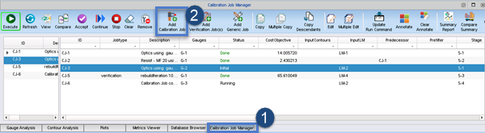

For Calibre
nmMPC, use the standard Calibre nmModelflow steps to create a calibration
job.
Procedure
- In Calibre nmModelflow, switch to the Calibration Job Manager tab.

- Click Add Calibration
Job.
- On the Gauge/Contour page, select the gauge
file you added to the database from the list, then click Next.
- On the Lithomodel/Predecessor page, select the
litho model you added to the database from the list, then click Next.
- On the Stage page, select the stage you added
to the database from the list, then ckick Next.
- On the Layer Mapping & Run Command page:
Check
that the layer mapping matches the layout layers in the list.
If
you have a custom run script, navigate to it and select it in place
of the default (run_rsh_ssh.sh).
Click Finish to
continue.
Note: This task skips the Optional
Components screen, since we have not created any filters, metrics,
or plots in this flow.
- On the Summary screen, enter a description of
the job and click OK.
The new calibration
job is added to the list.
- To run a calibration job, select it from the
list and click the Execute button
in the button bar.
Results
When a calibration job is executed, it creates
a Calibration Job Record of
the run. The Calibration Job Record contains the results of the
run, and also contains error information in the Transcripts > Job section if the
run did not complete successfully. You can access it by selecting
the job and clicking View.